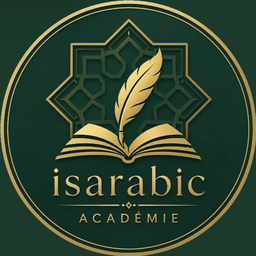

<!DOCTYPE html>
<html lang="fr" data-theme="dark">
<head>
<meta charset="utf-8">
<meta name="viewport" content="width=device-width,initial-scale=1,viewport-fit=cover">
<title>Hourouf — révision des lettres</title>
<meta name="theme-color" content="#1B3A2B">
<link rel="manifest" href="manifest.webmanifest">
<link rel="apple-touch-icon" href="apple-touch-icon.png">
<meta name="apple-mobile-web-app-capable" content="yes">
<meta name="apple-mobile-web-app-title" content="isarabic">
<link rel="preconnect" href="https://fonts.googleapis.com">
<link rel="preconnect" href="https://fonts.gstatic.com" crossorigin>
<link href="https://fonts.googleapis.com/css2?family=Amiri:wght@400;700&display=swap" rel="stylesheet">
<style>
:root{
  --bg:#12281D; --surf:#1B3A2B; --surf2:#245038; --line:#33654A;
  --ink:#F4EFE4; --muted:#93AB9C; --gold:#D9B972; --jade:#5FBF9B; --clay:#E08974;
}
[data-theme="light"]{
  --bg:#F4EFE4; --surf:#FFFFFF; --surf2:#EFE8D8; --line:#DCD2BE;
  --ink:#1B3B2C; --muted:#6B7C71; --gold:#96762F; --jade:#2E8B68; --clay:#B85340;
}
*{box-sizing:border-box;-webkit-tap-highlight-color:transparent}
html,body{margin:0;padding:0}
body{
  background:var(--bg); color:var(--ink); min-height:100vh;
  font-family:ui-sans-serif,system-ui,-apple-system,"Segoe UI",Roboto,sans-serif;
  font-size:15px; line-height:1.5;
  padding:16px 13px calc(40px + env(safe-area-inset-bottom));
  transition:background .2s,color .2s;
}
.wrap{max-width:600px;margin:0 auto}
.ar{font-family:'Amiri','Traditional Arabic','Geeza Pro',serif;direction:rtl;line-height:1.6}

.eb{font-size:9.5px;letter-spacing:.18em;text-transform:uppercase;color:var(--gold);font-weight:700}
.sub{font-size:11.5px;color:var(--muted);margin:5px 0 0}

/* --- filtres --- */
.chips{display:flex;gap:5px;flex-wrap:wrap;margin-bottom:13px}
.chip{padding:5px 10px;border-radius:999px;border:1px solid var(--line);
  background:transparent;color:var(--muted);font-size:11px;cursor:pointer;font-family:inherit}
.chip[aria-pressed="true"]{background:var(--gold);color:var(--bg);border-color:var(--gold);font-weight:600}
[data-theme="light"] .chip[aria-pressed="true"]{color:#fff}
.chip .ar{display:inline;font-size:14px}

/* --- cartes --- */
.card{background:var(--surf);border:1px solid var(--line);border-radius:15px;padding:19px 15px}
.card.c{text-align:center}
.card+.card{margin-top:12px}

.glyph{font-size:96px;line-height:1.25;min-height:124px;display:flex;
  align-items:center;justify-content:center;user-select:none}
.glyph.sm{font-size:56px;min-height:96px}
.tag{display:inline-block;margin-bottom:11px;padding:4px 12px;border-radius:999px;
  background:var(--surf2);border:1px solid var(--line);
  font-size:9.5px;letter-spacing:.12em;text-transform:uppercase;color:var(--gold);font-weight:600}

.opts{display:grid;grid-template-columns:1fr 1fr;gap:8px;margin-top:15px}
.opt{padding:13px 6px;border-radius:11px;border:1px solid var(--line);background:var(--surf2);
  color:var(--ink);font-size:15px;font-weight:600;cursor:pointer;min-height:52px;font-family:inherit}
.opt.big{font-size:38px;padding:6px}
.opt[data-s="good"]{border-color:var(--jade);background:color-mix(in srgb,var(--jade) 16%,transparent);color:var(--jade)}
.opt[data-s="bad"]{border-color:var(--clay);background:color-mix(in srgb,var(--clay) 16%,transparent);color:var(--clay)}
.opt[data-s="dim"]{opacity:.3}
.opt:disabled{cursor:default}

.fb{margin-top:13px;font-size:13px;min-height:19px}
.ok{color:var(--jade);font-weight:600}
.no{color:var(--clay);font-weight:600}

.info{margin-top:12px;padding:12px;border-radius:11px;background:var(--surf2);
  border:1px dashed var(--line);font-size:11.5px;color:var(--muted);text-align:left;line-height:1.55}
.info b{color:var(--gold)}
.trap{margin-top:8px;padding:8px 10px;border-radius:8px;
  background:color-mix(in srgb,var(--clay) 12%,transparent);
  border-left:2px solid var(--clay);color:var(--clay)}
.fam{display:flex;gap:12px;justify-content:center;margin-top:9px;flex-wrap:wrap}
.fam div{text-align:center}
.fam span{display:block;font-size:9px;color:var(--muted)}

.btn{margin-top:13px;width:100%;padding:13px;border-radius:11px;border:none;
  background:var(--gold);color:var(--bg);font-size:14px;font-weight:700;cursor:pointer;font-family:inherit}
[data-theme="light"] .btn{color:#fff}
.btn2{background:transparent;border:1px solid var(--line);color:var(--muted);
  border-radius:9px;padding:7px 11px;font-size:11px;cursor:pointer;font-family:inherit}
.btn2[data-on="1"]{border-color:var(--clay);color:var(--clay)}
.acts{display:flex;gap:6px;flex-wrap:wrap;margin-top:10px}

.stats{display:flex;gap:6px;margin-top:14px}
.stat{flex:1;background:var(--surf);border:1px solid var(--line);border-radius:11px;
  padding:9px 5px;text-align:center}
.stat b{display:block;font-size:17px}
.stat span{font-size:9px;letter-spacing:.08em;text-transform:uppercase;color:var(--muted)}

.grid{display:grid;grid-template-columns:repeat(auto-fill,minmax(58px,1fr));gap:5px;margin-top:11px}
.cell{background:var(--surf);border:1px solid var(--line);border-radius:9px;padding:7px 2px;text-align:center}
.cell .ar{font-size:25px}
.cell small{display:block;font-size:8.5px;color:var(--muted)}
.bar{height:3px;border-radius:2px;background:var(--line);margin-top:4px;overflow:hidden}
.bar i{display:block;height:100%}

.row{border-bottom:1px solid var(--line);padding:13px 0}
.row:last-child{border-bottom:none}
.rt{display:flex;align-items:center;justify-content:space-between;gap:10px}

.sw{width:46px;height:26px;border-radius:999px;border:1px solid var(--line);
  background:var(--surf2);position:relative;cursor:pointer;flex-shrink:0;padding:0}
.sw i{position:absolute;top:2px;left:2px;width:20px;height:20px;border-radius:50%;
  background:var(--muted);transition:left .16s,background .16s}
.sw[aria-checked="true"]{background:color-mix(in srgb,var(--gold) 26%,transparent);border-color:var(--gold)}
.sw[aria-checked="true"] i{left:22px;background:var(--gold)}

.note{font-size:11px;color:var(--muted);line-height:1.6;margin-top:10px}
.warn{margin-top:11px;padding:10px 12px;border-radius:10px;font-size:11px;line-height:1.55;
  background:color-mix(in srgb,var(--gold) 10%,transparent);
  border-left:2px solid var(--gold);color:var(--gold)}
.warn.bad{background:color-mix(in srgb,var(--clay) 10%,transparent);border-left-color:var(--clay);color:var(--clay)}


/* --- en-tête --- */
.top{display:flex;align-items:center;justify-content:space-between;gap:11px;margin-bottom:4px}
.brand{display:flex;gap:11px;align-items:center;min-width:0}
.brand img{border-radius:50%;flex-shrink:0}
.brand h1{font-size:18px;font-weight:700;margin:0;letter-spacing:-.01em}
.brand .sub{font-size:11px;color:var(--muted);margin:2px 0 0}
.hbtns{display:flex;gap:6px;flex-shrink:0}
.icb{background:transparent;border:1px solid var(--line);color:var(--muted);
  border-radius:999px;width:36px;height:36px;font-size:15px;cursor:pointer;font-family:inherit;
  display:inline-flex;align-items:center;justify-content:center}
.icb:hover{border-color:var(--gold);color:var(--ink)}
.back{display:inline-flex;align-items:center;gap:7px;background:transparent;border:none;
  color:var(--muted);font-size:12.5px;cursor:pointer;padding:6px 0;font-family:inherit;font-weight:600}
.back:hover{color:var(--gold)}
.secttl{font-size:19px;font-weight:700;margin:2px 0 3px}

/* --- accueil --- */
.resume{background:var(--surf);border:1px solid var(--line);border-radius:15px;padding:15px;margin-top:14px}
.resume .lbl{font-size:9.5px;letter-spacing:.16em;text-transform:uppercase;color:var(--gold);font-weight:700}
.pbar{height:6px;border-radius:3px;background:var(--surf2);margin-top:9px;overflow:hidden}
.pbar i{display:block;height:100%;background:var(--gold);border-radius:3px}
.pmeta{display:flex;justify-content:space-between;font-size:11px;color:var(--muted);margin-top:6px}
.cont{margin-top:12px;width:100%;padding:14px;border-radius:11px;border:none;
  background:var(--gold);color:var(--bg);font-size:14.5px;font-weight:700;cursor:pointer;font-family:inherit}
[data-theme="light"] .cont{color:#fff}

.grouptitle{font-size:9.5px;letter-spacing:.16em;text-transform:uppercase;color:var(--muted);
  font-weight:700;margin:20px 0 8px}
.menu{display:grid;gap:8px}
.mi{display:flex;align-items:center;gap:12px;width:100%;text-align:left;
  background:var(--surf);border:1px solid var(--line);border-radius:13px;
  padding:13px 14px;cursor:pointer;font-family:inherit;color:var(--ink)}
.mi:hover{border-color:var(--gold)}
.mi:disabled{opacity:.42;cursor:not-allowed}
.mi .ico{width:38px;height:38px;border-radius:10px;background:var(--surf2);flex-shrink:0;
  display:flex;align-items:center;justify-content:center;font-size:21px;
  font-family:'Amiri',serif;color:var(--gold)}
.mi .tx{flex:1;min-width:0}
.mi .tx b{display:block;font-size:14px;font-weight:700}
.mi .tx span{display:block;font-size:11px;color:var(--muted);margin-top:2px;line-height:1.4}
.mi .arrow{color:var(--muted);font-size:16px;flex-shrink:0}
.mi .badge{font-size:9px;letter-spacing:.09em;text-transform:uppercase;color:var(--gold);
  border:1px solid var(--line);border-radius:999px;padding:2px 7px;font-weight:700}

/* --- alphabet --- */
.alpha{display:grid;gap:7px;margin-top:11px}
.al{display:flex;align-items:center;gap:11px;width:100%;text-align:left;
  background:var(--surf);border:1px solid var(--line);border-radius:12px;
  padding:10px 12px;cursor:pointer;font-family:inherit;color:var(--ink)}
.al:hover{border-color:var(--gold)}
.al[data-locked="1"]{opacity:.55}
.al .big{font-size:34px;min-width:44px;text-align:center;font-family:'Amiri',serif;direction:rtl}
.al .meta{flex:1;min-width:0}
.al .meta b{font-size:13px;display:block}
.al .meta span{font-size:10px;color:var(--muted);display:block;margin-top:1px}
.al .fourforms{font-family:'Amiri',serif;direction:rtl;font-size:19px;color:var(--muted);
  letter-spacing:5px;white-space:nowrap}
.al .spk{color:var(--gold);font-size:15px;flex-shrink:0}
.alnote{font-size:9px;color:var(--gold);border:1px solid var(--line);border-radius:999px;
  padding:1px 6px;margin-left:5px;text-transform:uppercase;letter-spacing:.08em}
@media(max-width:420px){.al .fourforms{display:none}}

h2{font-size:15px;margin:0 0 3px;font-weight:700}
h3{font-size:12.5px;margin:14px 0 5px;color:var(--gold);font-weight:700}
table{width:100%;border-collapse:collapse;font-size:11.5px;margin-top:8px}
th,td{text-align:left;padding:6px 5px;border-bottom:1px solid var(--line)}
th{color:var(--gold);font-size:9.5px;letter-spacing:.09em;text-transform:uppercase}
td .ar{font-size:21px}

.sunmoon{display:grid;grid-template-columns:1fr 1fr;gap:9px;margin-top:9px}
.sunmoon>div{border:1px solid var(--line);border-radius:11px;padding:11px 9px}
.sunmoon .lets{display:flex;flex-wrap:wrap;gap:4px;margin-top:7px}
.sunmoon .lets span{background:var(--surf2);border-radius:6px;padding:2px 7px;font-size:19px;
  font-family:'Amiri',serif}
.moon{border-color:var(--jade)!important}
.moon .ttl{color:var(--jade)}
.sun{border-color:var(--clay)!important}
.sun .ttl{color:var(--clay)}
.ttl{font-weight:700;font-size:12.5px}

.hero{text-align:center;padding:20px 14px;border-radius:15px;background:var(--surf);
  border:1px solid var(--gold);margin-top:16px}
.hero .ar{font-size:38px;color:var(--gold)}

.reset{margin-top:18px;width:100%;padding:9px;border-radius:9px;background:transparent;
  border:1px solid var(--line);color:var(--muted);font-size:11px;cursor:pointer;font-family:inherit}
.hidden{display:none!important}
@media(max-width:370px){.glyph{font-size:78px;min-height:102px}.sunmoon{grid-template-columns:1fr}}
@media(prefers-reduced-motion:reduce){*{transition:none!important}}
</style>
</head>
<body>
<div class="wrap">
  <header class="top" id="top"></header>
  <div id="view"></div>
</div>

<script src="data.js"></script>
<script>
/* ================= CONSTANTES ================= */
const BY = Object.fromEntries(LETTERS.map(l=>[l.id,l]));
const POS = {isolee:"isolée",debut:"début",milieu:"milieu",fin:"fin"};
const HARAKAT = [
  {k:"a", mark:"\u064E", name:"Fatha",  ar:"الفَتْحَة", son:"a",  desc:"Petit trait oblique au-dessus de la lettre."},
  {k:"u", mark:"\u064F", name:"Damma",  ar:"الضَّمَّة", son:"ou", desc:"Petite virgule (un wāw miniature) au-dessus de la lettre."},
  {k:"i", mark:"\u0650", name:"Kasra",  ar:"الكَسْرَة", son:"i",  desc:"Petit trait oblique en dessous de la lettre."}
];
const SUKUN="\u0652", SHADDA="\u0651";
const TANWIN=[{m:"\u064B",n:"Tanwîn fatha",s:"an"},{m:"\u064C",n:"Tanwîn damma",s:"oun"},{m:"\u064D",n:"Tanwîn kasra",s:"in"}];
const FAMS={
  dents:{lab:"ب ت ث ن ي",note:"Squelette identique en début et milieu — seuls les points changent."},
  sin:{lab:"س ش",note:"Squelette identique — 0 ou 3 points."},
  sad:{lab:"ص ض",note:"Squelette identique — 0 ou 1 point."},
  djim:{lab:"ج ح خ",note:"Squelette identique — point dessous, rien, ou point dessus."},
  dal:{lab:"د ذ",note:"Squelette identique — 0 ou 1 point."},
  ra:{lab:"ر ز",note:"Squelette identique — 0 ou 1 point."},
  tta:{lab:"ط ظ",note:"Squelette identique — 0 ou 1 point."},
  ayn:{lab:"ع غ",note:"Squelette identique — 0 ou 1 point."},
  faqaf:{lab:"ف ق",note:"Squelette identique en début et milieu — 1 ou 2 points."},
  solo:{lab:"م ل ا و ه ك",note:"Squelettes uniques, aucune confusion possible."}
};
const NONLIANTES = ["alif","dal","dhal","ra","zay","waw"];
const SOLAIRES = ["ت","ث","د","ذ","ر","ز","س","ش","ص","ض","ط","ظ","ل","ن"];
const LUNAIRES = ["ء","ب","ج","ح","خ","ع","غ","ف","ق","ك","م","ه","و","ي"];
const WORDS=[
 {ar:"مَا",fr:"quoi",l:["mim","alif"],slug:"ma"},
 {ar:"لَا",fr:"non",l:["lam","alif"],slug:"la"},
 {ar:"مِنْ",fr:"de, depuis",l:["mim","nun"],slug:"min"},
 {ar:"هُوَ",fr:"lui",l:["ha","waw"],slug:"houwa"},
 {ar:"هِيَ",fr:"elle",l:["ha","ya"],slug:"hiya"},
 {ar:"لَيْل",fr:"nuit",l:["lam","ya","lam"],slug:"layl"},
 {ar:"شَمْس",fr:"soleil",l:["shin","mim","sin"],slug:"shams"},
 {ar:"سَلَام",fr:"paix",l:["sin","lam","alif","mim"],slug:"salam"},
 {ar:"مُسْلِم",fr:"musulman",l:["mim","sin","lam","mim"],slug:"muslim"},
 {ar:"هِلَال",fr:"croissant de lune",l:["ha","lam","alif","lam"],slug:"hilal"},
 {ar:"لِسَان",fr:"langue",l:["lam","sin","alif","nun"],slug:"lisan"},
 {ar:"يَمِين",fr:"droite",l:["ya","mim","ya","nun"],slug:"yamin"},
 {ar:"سَهْل",fr:"facile",l:["sin","ha","lam"],slug:"sahl"},
 {ar:"نَمْل",fr:"fourmis",l:["nun","mim","lam"],slug:"naml"},
 {ar:"شَمَال",fr:"nord",l:["shin","mim","alif","lam"],slug:"shamal"},
 {ar:"لَيْمُون",fr:"citron",l:["lam","ya","mim","waw","nun"],slug:"laymun"},
 {ar:"فَم",fr:"bouche",l:["fa","mim"],slug:"fam"},
 {ar:"بَيْت",fr:"maison",l:["ba","ya","ta"],slug:"bayt"},
 {ar:"كِتَاب",fr:"livre",l:["kaf","ta","alif","ba"],slug:"kitab"},
 {ar:"نُور",fr:"lumière",l:["nun","waw","ra"],slug:"nur"},
 {ar:"زَيْت",fr:"huile",l:["zay","ya","ta"],slug:"zayt"},
 {ar:"بِنْت",fr:"fille",l:["ba","nun","ta"],slug:"bint"},
 {ar:"كَلْب",fr:"chien",l:["kaf","lam","ba"],slug:"kalb"},
 {ar:"لَبَن",fr:"lait",l:["lam","ba","nun"],slug:"laban"},
 {ar:"مَلِك",fr:"roi",l:["mim","lam","kaf"],slug:"malik"},
 {ar:"تَمْر",fr:"dattes",l:["ta","mim","ra"],slug:"tamr"},
 {ar:"شَهْر",fr:"mois",l:["shin","ha","ra"],slug:"shahr"},
 {ar:"سَفَر",fr:"voyage",l:["sin","fa","ra"],slug:"safar"},
 {ar:"رَمْل",fr:"sable",l:["ra","mim","lam"],slug:"raml"},
 {ar:"كَبِير",fr:"grand",l:["kaf","ba","ya","ra"],slug:"kabir"},
 {ar:"كَرِيم",fr:"généreux",l:["kaf","ra","ya","mim"],slug:"karim"},
 {ar:"رَسُول",fr:"messager",l:["ra","sin","waw","lam"],slug:"rasul"},
 {ar:"مَكْتَب",fr:"bureau",l:["mim","kaf","ta","ba"],slug:"maktab"},
 {ar:"دَرْس",fr:"leçon",l:["dal","ra","sin"],slug:"dars"},
 {ar:"عَين",fr:"œil",l:["ayn","ya","nun"],slug:"ayn"},
 {ar:"جَمَل",fr:"chameau",l:["djim","mim","lam"],slug:"jamal"},
 {ar:"ثَوب",fr:"vêtement",l:["tha","waw","ba"],slug:"thawb"},
 {ar:"ذَهَب",fr:"or",l:["dhal","ha","ba"],slug:"dhahab"},
 {ar:"عِلْم",fr:"science",l:["ayn","lam","mim"],slug:"ilm"},
 {ar:"جَبَل",fr:"montagne",l:["djim","ba","lam"],slug:"jabal"},
 {ar:"عَبْد",fr:"serviteur",l:["ayn","ba","dal"],slug:"abd"},
 {ar:"جَدِيد",fr:"nouveau",l:["djim","dal","ya","dal"],slug:"jadid"},
 {ar:"حَجّ",fr:"pèlerinage",l:["hha","djim"],slug:"hajj"},
 {ar:"خُبْز",fr:"pain",l:["kha","ba","zay"],slug:"khubz"},
 {ar:"صَبْر",fr:"patience",l:["sad","ba","ra"],slug:"sabr"},
 {ar:"غَيم",fr:"nuage",l:["ghayn","ya","mim"],slug:"ghaym"},
 {ar:"قَمَر",fr:"lune",l:["qaf","mim","ra"],slug:"qamar"},
 {ar:"قَلْب",fr:"cœur",l:["qaf","lam","ba"],slug:"qalb"},
 {ar:"خَير",fr:"bien",l:["kha","ya","ra"],slug:"khayr"},
 {ar:"صَغِير",fr:"petit",l:["sad","ghayn","ya","ra"],slug:"saghir"},
 {ar:"حَلِيب",fr:"lait",l:["hha","lam","ya","ba"],slug:"halib"},
 {ar:"مِصْر",fr:"Égypte",l:["mim","sad","ra"],slug:"misr"},
 {ar:"طِفْل",fr:"enfant",l:["tta","fa","lam"],slug:"tifl"},
 {ar:"ظُهْر",fr:"midi",l:["zza","ha","ra"],slug:"zuhr"},
 {ar:"وَطَن",fr:"patrie",l:["waw","tta","nun"],slug:"watan"},
 {ar:"مَطَر",fr:"pluie",l:["mim","tta","ra"],slug:"matar"},
 {ar:"نَظَر",fr:"regard",l:["nun","zza","ra"],slug:"nazar"},
 {ar:"ضَرَب",fr:"il a frappé",l:["dad","ra","ba"],slug:"daraba"}
];


/* ================= SECTIONS ================= */
const SECTIONS={
  reco:{t:"Reconnaître une lettre",d:"Une forme s'affiche seule, tu donnes son nom.",ico:"ن"},
  retro:{t:"Retrouver la forme",d:"On te donne le nom et la position, tu choisis la forme.",ico:"ـنـ"},
  syl:{t:"Lire une syllabe",d:"Lettre + voyelle courte : بَ بُ بِ",ico:"بَ",mod:"harakat"},
  dictee:{t:"Dictée à l'oreille",d:"Tu écoutes la voix du professeur et tu identifies la lettre.",ico:"◉"},
  lire:{t:"Lire des mots",d:"Des mots composés uniquement de tes lettres acquises.",ico:"كَ"},
  alphabet:{t:"L'alphabet",d:"Les 28 lettres et leurs formes. Touche une lettre pour l'entendre.",ico:"أ"},
  regles:{t:"Les règles",d:"Harakat, chadda, soukoûn, tanwîn, hamza, solaires et lunaires.",ico:"◈"},
  set:{t:"Réglages",d:"Fiches suivies, modules, thème, sauvegarde.",ico:"⚙"}
};
const DRILLS=["reco","retro","syl","dictee"];

/* ================= ÉTAT ================= */
const KEY="hourouf.v3";
let S = {theme:"dark", fiches:[1], mod:{harakat:false,signes:false}, stats:{}, last:"reco"};
let tab="home", filter="all", sylFilter="all", q=null, ans=null, lastKey=null;
let session={r:0,t:0}, revealed={}, ioMsg=null, recFor=null, recErr=null;
let mediaRec=null, recChunks=[], myRec={};
const audioCache={};   // url -> true/false (existe ou non)

function load(){
  try{const raw=localStorage.getItem(KEY); if(raw){const d=JSON.parse(raw);
    if(d.theme) S.theme=d.theme;
    if(Array.isArray(d.fiches)&&d.fiches.length) S.fiches=d.fiches;
    if(d.mod) S.mod={...S.mod,...d.mod};
    if(d.stats) S.stats=d.stats;
    if(d.last) S.last=d.last;
  }}catch(e){}
}
function save(){ try{localStorage.setItem(KEY,JSON.stringify(S));}catch(e){} }

/* ================= UTILITAIRES ================= */
const avail = ()=>LETTERS.filter(l=>S.fiches.includes(l.f));
const esc = s=>String(s).replace(/[&<>"]/g,c=>({"&":"&amp;","<":"&lt;",">":"&gt;",'"':"&quot;"}[c]));
function shuffle(a){a=[...a];for(let i=a.length-1;i>0;i--){const j=Math.random()*(i+1)|0;[a[i],a[j]]=[a[j],a[i]];}return a;}
function wOf(s){ if(!s||!s.seen) return 6; const acc=s.correct/s.seen; return 1+(1-acc)*8+Math.max(0,3-(s.streak||0)); }
function pick(items,avoid){
  const p = items.length>1 ? items.filter(i=>i.key!==avoid) : items;
  if(!p.length) return null;
  const w=p.map(i=>wOf(S.stats[i.key]));
  let r=Math.random()*w.reduce((a,b)=>a+b,0);
  for(let i=0;i<p.length;i++){ r-=w[i]; if(r<=0) return p[i]; }
  return p[p.length-1];
}
function distractors(letter,n,pos){
  const A=avail(), ok=l=>l.id!==letter.id&&(!pos||l.forms[pos]);
  const same=A.filter(l=>ok(l)&&l.sk===letter.sk), other=A.filter(l=>ok(l)&&l.sk!==letter.sk);
  return [...shuffle(same),...shuffle(other)].slice(0,n);
}
function letterItems(){
  let pool=avail();
  if(filter.startsWith("fam:")) pool=pool.filter(l=>l.sk===filter.slice(4));
  else if(filter==="new"){const mx=Math.max(...S.fiches); pool=pool.filter(l=>l.f===mx);}
  else if(filter==="nonliantes") pool=pool.filter(l=>NONLIANTES.includes(l.id));
  let items=[];
  pool.forEach(l=>Object.keys(l.forms).forEach(p=>items.push({key:l.id+":"+p,id:l.id,pos:p})));
  if(filter==="weak"){
    const w=items.filter(i=>{const s=S.stats[i.key];return s&&s.seen>=2&&s.correct/s.seen<.75;});
    if(w.length>=4) items=w;
  }
  return items;
}
function sylItems(){
  let pool=avail().filter(l=>!l.noSyl);
  if(sylFilter==="new"){const mx=Math.max(...S.fiches); pool=pool.filter(l=>l.f===mx);}
  let items=[];
  pool.forEach(l=>HARAKAT.forEach(h=>items.push({key:"syl:"+l.id+":"+h.k,id:l.id,h:h.k})));
  if(sylFilter==="weak"){
    const w=items.filter(i=>{const s=S.stats[i.key];return s&&s.seen>=2&&s.correct/s.seen<.75;});
    if(w.length>=4) items=w;
  }
  return items;
}
const sylText=(l,h)=>l.forms.isolee+HARAKAT.find(x=>x.k===h).mark;
const sylTr=(l,h)=>l.tr+HARAKAT.find(x=>x.k===h).son;

/* ================= AUDIO ================= */
const AUDIO_EXT=["m4a","mp3","opus","ogg","webm"];
async function findAudio(folder,name){
  const base=`audio/${folder}/${name}`;
  if(audioCache[base]!==undefined) return audioCache[base];
  for(const ext of AUDIO_EXT){
    try{
      const r=await fetch(`${base}.${ext}`,{method:"HEAD"});
      if(r.ok){ audioCache[base]=`${base}.${ext}`; return audioCache[base]; }
    }catch(e){}
  }
  audioCache[base]=null; return null;
}
let currentAudio=null;
function playUrl(u){
  try{ if(currentAudio){currentAudio.pause();} currentAudio=new Audio(u); currentAudio.play(); }catch(e){}
}
function playBlob(d){ try{ if(currentAudio)currentAudio.pause(); currentAudio=new Audio(d); currentAudio.play(); }catch(e){} }
// Ordre : syllabe isolée > vocal groupé de la lettre > enregistrement local
async function playLetter(id,h){
  if(h){ const s=await findAudio("syllabes",`${id}-${h}`); if(s) return playUrl(s); }
  const l=await findAudio("lettres",id); if(l) return playUrl(l);
  if(myRec[id]) return playBlob(myRec[id]);
  return false;
}
async function playWord(slug){ const u=await findAudio("mots",slug); if(u) playUrl(u); return !!u; }

function bestMime(){
  if(typeof MediaRecorder==="undefined") return null;
  for(const m of ["audio/mp4","audio/webm;codecs=opus","audio/webm","audio/ogg;codecs=opus"])
    if(MediaRecorder.isTypeSupported&&MediaRecorder.isTypeSupported(m)) return m;
  return "";
}
async function startRec(){
  recErr=null;
  if(!navigator.mediaDevices||!navigator.mediaDevices.getUserMedia){
    recErr="Ce navigateur ne donne pas accès au micro. Utilise Safari ou Chrome à jour, en HTTPS."; return false;
  }
  try{
    const stream=await navigator.mediaDevices.getUserMedia({audio:true});
    const mime=bestMime();
    mediaRec = mime ? new MediaRecorder(stream,{mimeType:mime}) : new MediaRecorder(stream);
    recChunks=[];
    mediaRec.ondataavailable=e=>{ if(e.data.size) recChunks.push(e.data); };
    mediaRec._stream=stream;
    mediaRec.start();
    return true;
  }catch(e){
    recErr = (e&&e.name==="NotAllowedError")
      ? "Micro refusé. Autorise le microphone pour ce site dans les réglages du navigateur."
      : "Micro inaccessible ("+(e&&e.name||"erreur")+").";
    return false;
  }
}
function stopRec(){
  return new Promise(res=>{
    if(!mediaRec||mediaRec.state==="inactive") return res(null);
    mediaRec.onstop=()=>{
      mediaRec._stream.getTracks().forEach(t=>t.stop());
      const b=new Blob(recChunks,{type:mediaRec.mimeType||"audio/mp4"});
      const fr=new FileReader(); fr.onload=()=>res(fr.result); fr.readAsDataURL(b);
    };
    mediaRec.stop();
  });
}

/* ================= QUESTIONS ================= */
function nextQ(){
  ans=null;
  if(tab==="reco"||tab==="retro"){
    const it=pick(letterItems(),lastKey); if(!it){q=null;return;}
    lastKey=it.key; const L=BY[it.id];
    if(tab==="reco"){
      q={mode:"reco",key:it.key,L,pos:it.pos,prompt:L.forms[it.pos],
         opts:shuffle([L,...distractors(L,3)]).map(x=>({id:x.id,lab:x.name})),good:L.id};
    }else{
      q={mode:"retro",key:it.key,L,pos:it.pos,prompt:`${L.name} — ${POS[it.pos]}`,
         opts:shuffle([L,...distractors(L,3,it.pos)]).map(x=>({id:x.id,lab:x.forms[it.pos],ar:1})),good:L.id};
    }
  } else if(tab==="syl"){
    const it=pick(sylItems(),lastKey); if(!it){q=null;return;}
    lastKey=it.key; const L=BY[it.id];
    // distracteurs : même lettre autres voyelles + lettres de la même famille
    const cands=[];
    HARAKAT.forEach(h=>{ if(h.k!==it.h) cands.push({id:L.id,h:h.k}); });
    distractors(L,2).forEach(d=>{ if(!d.noSyl) cands.push({id:d.id,h:it.h}); });
    const opts=shuffle([{id:L.id,h:it.h},...shuffle(cands).slice(0,3)]);
    q={mode:"syl",key:it.key,L,h:it.h,prompt:sylText(L,it.h),
       opts:opts.map(o=>({id:o.id+":"+o.h,lab:sylTr(BY[o.id],o.h)})),good:L.id+":"+it.h};
  } else if(tab==="dictee"){
    const it=pick(letterItems().filter(i=>i.pos==="isolee"),lastKey); if(!it){q=null;return;}
    lastKey=it.key; const L=BY[it.id];
    q={mode:"dictee",key:"dic:"+it.id,L,
       opts:shuffle([L,...distractors(L,3)]).map(x=>({id:x.id,lab:x.forms.isolee,ar:1})),good:L.id};
  }
}
function answer(id){
  if(ans||!q) return;
  const good=id===q.good; ans={id,good};
  const p=S.stats[q.key]||{seen:0,correct:0,streak:0};
  S.stats[q.key]={seen:p.seen+1,correct:p.correct+(good?1:0),streak:good?(p.streak||0)+1:0};
  session={r:session.r+(good?1:0),t:session.t+1};
  save(); render();
  if(q.mode==="dictee"&&good) setTimeout(()=>{nextQ();render();},900);
}

/* ================= RENDU ================= */
const V=()=>document.getElementById("view");

function navHtml(){
  const t=[["lettres","Lettres"],["retro","Formes"],["syllabes","Syllabes"],
           ["dictee","Dictée"],["lire","Lire"],["regles","Règles"],["set","Réglages"]];
  return t.map(([k,lab])=>{
    const off = (k==="syllabes"&&!S.mod.harakat);
    return `<button data-tab="${k}" aria-selected="${tab===k}" ${off?"disabled title='Active le module Harakat dans Réglages'":""}>${lab}</button>`;
  }).join("");
}

function statsHtml(){
  const A=avail(); let solid=0,total=0;
  A.forEach(l=>Object.keys(l.forms).forEach(p=>{
    total++; const s=S.stats[l.id+":"+p]; if(s&&s.seen>=3&&s.correct/s.seen>=.8) solid++;
  }));
  const pct=session.t?Math.round(session.r/session.t*100):0;
  return `<div class="stats">
    <div class="stat"><b>${session.t}</b><span>Session</span></div>
    <div class="stat"><b style="color:${pct>=80?'var(--jade)':'var(--ink)'}">${session.t?pct+"%":"—"}</b><span>Réussite</span></div>
    <div class="stat"><b style="color:var(--gold)">${solid}/${total}</b><span>Acquis</span></div>
  </div>`;
}
function gridHtml(){
  return `<div class="grid">${avail().map(l=>{
    let seen=0,ok=0;
    Object.keys(l.forms).forEach(p=>{const s=S.stats[l.id+":"+p]; if(s){seen+=s.seen;ok+=s.correct;}});
    const a=seen?ok/seen:null;
    return `<div class="cell"><div class="ar">${l.forms.isolee}</div><small>${l.name}</small>
      <div class="bar"><i style="width:${a===null?0:Math.round(a*100)}%;background:${a!==null&&a<.7?'var(--clay)':'var(--jade)'}"></i></div></div>`;
  }).join("")}</div>`;
}
function infoHtml(L,extra){
  const A=avail(), fam=A.filter(x=>x.sk===L.sk);
  let h=`<div class="info"><div><b>${L.name}</b> · ${L.dots} · ${L.cx?"se lie à la suivante":"ne se lie pas à la suivante"}</div>`;
  if(L.sk!=="solo"&&fam.length>1){
    const p=L.forms.milieu?"milieu":"fin";
    h+=`<div style="margin-top:8px">${FAMS[L.sk].note}</div><div class="fam">${
      fam.map(x=>`<div><div class="ar" style="font-size:26px">${x.forms[p]||x.forms.isolee}</div><span>${x.name}</span></div>`).join("")}</div>`;
  }
  h+=`<div style="margin-top:9px">${esc(L.mouth)}</div>`;
  if(L.trap) h+=`<div class="trap">${esc(L.trap)}</div>`;
  h+=extra||"";
  h+=`<div class="acts"><button class="btn2" data-play="${L.id}">▸ Écouter la lettre</button>
      <button class="btn2" data-playw="${L.word.slug}">▸ ${L.word.ar} — ${L.word.fr}</button></div>`;
  return h+`</div>`;
}

function drillView(){
  if(!q) return `<div class="card"><p class="sub">Aucun élément dans ce filtre. Choisis « Tout » ou active une fiche de plus.</p></div>`;
  const isDic=q.mode==="dictee";
  let head;
  if(isDic) head=`<div class="tag">Écoute et choisis</div>
    <div class="glyph"><button class="btn" style="width:auto;padding:18px 30px;font-size:26px" data-play="${q.L.id}">▸</button></div>`;
  else if(q.mode==="retro") head=`<div class="tag">Quelle forme ?</div><div class="glyph" style="font-size:26px;font-weight:700">${esc(q.prompt)}</div>`;
  else if(q.mode==="syl") head=`<div class="tag">Comment ça se lit ?</div><div class="glyph ar">${q.prompt}</div>`;
  else head=`<div class="tag">Quelle lettre ?</div><div class="glyph ar">${q.prompt}</div>`;

  const opts=q.opts.map(o=>{
    let s=""; if(ans) s=o.id===q.good?"good":(o.id===ans.id?"bad":"dim");
    return `<button class="opt ${o.ar?"ar big":""}" data-s="${s}" data-ans="${o.id}" ${ans?"disabled":""}>${o.lab}</button>`;
  }).join("");

  let fb="";
  if(ans){
    if(ans.good) fb=`<span class="ok">Correct</span>`;
    else if(q.mode==="syl") fb=`<span class="no">C'était ${sylTr(q.L,q.h)} — ${q.L.name} + ${HARAKAT.find(h=>h.k===q.h).name}</span>`;
    else if(isDic) fb=`<span class="no">C'était ${q.L.name}</span>`;
    else fb=`<span class="no">C'était ${q.L.name} — ${POS[q.pos]}</span>`;
  }
  let extra="";
  if(q.mode==="syl"&&ans){
    extra=`<div style="margin-top:9px">Les trois voyelles sur ${q.L.name} :</div><div class="fam">${
      HARAKAT.map(h=>`<div><div class="ar" style="font-size:30px">${sylText(q.L,h.k)}</div><span>${sylTr(q.L,h.k)}</span></div>`).join("")}</div>`;
  }
  return `<div class="card c">${head}<div class="opts">${opts}</div><div class="fb">${fb}</div>
    ${ans?infoHtml(q.L,extra):""}${ans?`<button class="btn" data-next="1">Suivante</button>`:""}</div>
    ${statsHtml()}${gridHtml()}
    <button class="reset" data-reset="1">Remettre les statistiques à zéro</button>`;
}

function filtersHtml(){
  const A=avail();
  const fams=Object.keys(FAMS).filter(f=>f!=="solo"&&A.filter(l=>l.sk===f).length>=2);
  let h=`<div class="chips"><button class="chip" data-f="all" aria-pressed="${filter==="all"}">Tout (${A.length})</button>`;
  if(S.fiches.length>1) h+=`<button class="chip" data-f="new" aria-pressed="${filter==="new"}">Dernière fiche</button>`;
  h+=`<button class="chip" data-f="weak" aria-pressed="${filter==="weak"}">Mes faiblesses</button>`;
  if(A.filter(l=>NONLIANTES.includes(l.id)).length>=2)
    h+=`<button class="chip" data-f="nonliantes" aria-pressed="${filter==="nonliantes"}">Non liantes</button>`;
  fams.forEach(f=>h+=`<button class="chip" data-f="fam:${f}" aria-pressed="${filter==="fam:"+f}"><span class="ar">${FAMS[f].lab}</span></button>`);
  return h+`</div>`;
}
function sylFiltersHtml(){
  let h=`<div class="chips"><button class="chip" data-sf="all" aria-pressed="${sylFilter==="all"}">Toutes</button>`;
  if(S.fiches.length>1) h+=`<button class="chip" data-sf="new" aria-pressed="${sylFilter==="new"}">Dernière fiche</button>`;
  h+=`<button class="chip" data-sf="weak" aria-pressed="${sylFilter==="weak"}">Mes faiblesses</button></div>`;
  return h;
}

function lireView(){
  const set=new Set(avail().map(l=>l.id));
  const ws=WORDS.filter(w=>w.l.every(x=>set.has(x)));
  return `<p class="sub" style="margin-bottom:11px">${ws.length} mots composés uniquement de tes lettres acquises. Déchiffre à voix haute, puis vérifie.</p>
  <div class="card" style="padding:2px 15px">${ws.map((w,i)=>`
    <div class="row"><div class="rt">
      <div><div class="ar" style="font-size:36px">${w.ar}</div>${revealed[i]?`<div class="note" style="margin-top:2px">${w.fr}</div>`:""}</div>
      <div style="display:flex;gap:5px">
        <button class="btn2" data-playw="${w.slug}">▸</button>
        <button class="btn2" data-rev="${i}">${revealed[i]?"Masquer":"Vérifier"}</button></div>
    </div>
    ${revealed[i]?`<div style="margin-top:8px;display:flex;gap:5px;flex-wrap:wrap;direction:rtl">${
      w.l.map(id=>`<div style="background:var(--surf2);border:1px solid var(--line);border-radius:8px;padding:3px 7px;text-align:center;min-width:36px">
      <div class="ar" style="font-size:20px">${BY[id].forms.isolee}</div>
      <b style="font-size:9px;color:var(--gold);display:block;direction:ltr">${BY[id].name}</b></div>`).join("")}</div>`:""}
    </div>`).join("")}</div>
  <div class="hero"><div class="eb" style="margin-bottom:10px">Lis-la, ne la récite pas de mémoire</div>
    <div class="ar">لَا إِلَٰهَ إِلَّا ٱللَّٰه</div>
    <p class="sub" style="margin-top:10px">Uniquement des lettres connues depuis la fiche 2.</p></div>`;
}

function reglesView(){
  const B="ب";
  let h=`<div class="card"><h2>Les trois voyelles courtes</h2><div class="note">الحَرَكَات — placées au-dessus ou en dessous de la lettre, elles indiquent la voyelle qui suit chaque consonne.</div>
  <table><tr><th>Signe</th><th>Nom</th><th>Son</th><th>Exemples</th></tr>
  ${HARAKAT.map(x=>`<tr><td class="ar" style="font-size:26px">${B+x.mark}</td><td><b>${x.name}</b><div class="note ar" style="margin:0">${x.ar}</div></td>
  <td style="color:var(--gold);font-weight:700">« ${x.son} »</td>
  <td class="ar">${["ba","ka","ma"].map((_,i)=>["ب","ك","م"][i]+x.mark).join(" ")}</td></tr>`).join("")}</table>
  <div class="warn">S'entraîner à lire chaque lettre apprise avec les trois voyelles avant de passer à la suite. C'est exactement ce que fait l'onglet Syllabes.</div></div>`;

  h+=`<div class="card"><h2>Chadda & Soukoûn</h2>
  <h3>Ash-Shadda ${B+SHADDA}</h3><div class="note">Petit « w » au-dessus de la lettre : elle est doublée, prononcée deux fois plus longtemps.</div>
  <table><tr><th>Signe</th><th>Lecture</th></tr>
  ${HARAKAT.map(x=>`<tr><td class="ar" style="font-size:26px">${B+SHADDA+x.mark}</td><td><b>b${x.son==="ou"?"bou":"b"+x.son}</b> — double + ${x.name.toLowerCase()}</td></tr>`).join("")}</table>
  <div class="note ar" style="font-size:24px;margin-top:8px">مُحَمَّد</div><div class="note" style="margin-top:0">Mouhammad — la deuxième mīm porte une chadda</div>
  <h3>As-Soukoûn ${B+SUKUN}</h3><div class="note">Petit cercle au-dessus : absence de voyelle. La lettre est prononcée sèche, elle s'arrête net.</div>
  <div class="fam" style="justify-content:flex-start">${["ب","م","ل"].map(c=>`<div><div class="ar" style="font-size:30px">${c+SUKUN}</div><span>son sec</span></div>`).join("")}</div>
  <div class="warn">Chadda et soukoûn sont les deux faces d'une même logique : l'une renforce la consonne, l'autre la ferme. Jamais les deux sur la même lettre.</div></div>`;

  h+=`<div class="card"><h2>Tanwîn & Hamza</h2>
  <h3>At-Tanwîn</h3><div class="note">Double la voyelle courte en fin de mot pour marquer l'indétermination (« un / une »). On ajoute un petit « n » nasal.</div>
  <table><tr><th>Signe</th><th>Nom</th><th>Son</th></tr>
  ${TANWIN.map(t=>`<tr><td class="ar" style="font-size:26px">${B+t.m}</td><td>${t.n}</td><td style="color:var(--gold);font-weight:700">« ${t.s} »</td></tr>`).join("")}</table>
  <div class="note ar" style="font-size:24px;margin-top:8px">كِتَابٌ</div><div class="note" style="margin-top:0">kitâbun — un livre</div>
  <h3>Al-Hamza</h3><div class="note">Pas une lettre à proprement parler : un coup de glotte, la petite coupure entre les deux « a » de « réagir ». Elle a besoin d'un support.</div>
  <table><tr><th>Forme</th><th>Support</th></tr>
  ${[["أ","sur alif — début / milieu"],["إ","sous alif — avec kasra"],["ؤ","sur wāw — milieu / fin"],["ئ","sur yā' — milieu"],["ء","seule — fin, après lettre non liée"]]
    .map(([a,d])=>`<tr><td class="ar" style="font-size:26px">${a}</td><td>${d}</td></tr>`).join("")}</table>
  <div class="warn">La hamza change de support selon sa position, mais reste toujours le même son : un coup de glotte.</div></div>`;

  h+=`<div class="card"><h2>Tā' marbūta & Alif madda</h2>
  <h3>At-Tā' Marbūta ة</h3><div class="note">Un hā' surmonté de deux points. Jamais en début ni milieu — uniquement en fin de mot. Marque très souvent le féminin.</div>
  <div class="warn">Se prononce « h » léger (ou pas du tout) si le mot s'arrête là ; « t » seulement si le mot continue.</div>
  <div class="fam" style="margin-top:9px">${[["مَدْرَسَة","madrasa — école"],["سَيَّارَة","sayyāra — voiture"]]
    .map(([a,d])=>`<div><div class="ar" style="font-size:28px">${a}</div><span>${d}</span></div>`).join("")}</div>
  <h3>Alif Madda آ</h3><div class="note">Alif + hamza, surmontés d'un signe en forme de vague. Un son « â » long et appuyé.</div>
  <div class="fam" style="margin-top:9px">${[["آلَة","āla — outil"],["قُرْآن","Qur'ân — le Coran"]]
    .map(([a,d])=>`<div><div class="ar" style="font-size:28px">${a}</div><span>${d}</span></div>`).join("")}</div></div>`;

  h+=`<div class="card"><h2>Lettres solaires et lunaires</h2>
  <div class="note">Quand on ajoute l'article ال devant un mot, sa prononciation change selon la première lettre.</div>
  <div class="sunmoon">
    <div class="moon"><div class="ttl">Lunaires</div><div class="note" style="margin-top:3px">Le lām du ال se prononce normalement.</div>
      <div class="lets">${LUNAIRES.map(c=>`<span>${c}</span>`).join("")}</div>
      <div class="ar" style="font-size:26px;margin-top:8px">القَمَر</div><div class="note" style="margin-top:0">al-qamar — la lune</div></div>
    <div class="sun"><div class="ttl">Solaires</div><div class="note" style="margin-top:3px">Le lām ne se prononce pas : la lettre suivante est doublée (chadda).</div>
      <div class="lets">${SOLAIRES.map(c=>`<span>${c}</span>`).join("")}</div>
      <div class="ar" style="font-size:26px;margin-top:8px">الشَّمس</div><div class="note" style="margin-top:0">ach-chams — le soleil</div></div>
  </div>
  <div class="warn">Les lunaires se prononcent comme la lune — de loin, distinctement. Les solaires fusionnent, comme la lumière du soleil qui se mélange à tout ce qu'elle touche.</div></div>`;

  h+=`<div class="card"><h2>Les 6 lettres qui ne se lient jamais</h2>
  <div class="note">Elles se lient à la lettre qui les précède, mais jamais à celle qui les suit. Après elles, l'écriture repart comme un nouveau segment.</div>
  <div class="fam" style="margin-top:10px">${NONLIANTES.map(id=>`<div><div class="ar" style="font-size:34px;color:var(--gold)">${BY[id].forms.isolee}</div><span>${BY[id].name}</span></div>`).join("")}</div>
  <div class="warn" style="direction:rtl;text-align:right;font-family:Amiri,serif;font-size:19px">ا - د - ذ - ر - ز - و</div>
  <div class="note">À répéter dans l'ordre jusqu'à l'automatisme.</div></div>`;

  h+=`<div class="card"><h2>Les 15 squelettes</h2>
  <div class="note">28 lettres, 100 formes, mais seulement 15 squelettes. Neuf familles où seuls les points changent, six lettres sans confusion possible.</div>
  ${Object.entries(FAMS).map(([k,v])=>`<div style="display:flex;gap:11px;align-items:baseline;padding:6px 0;border-bottom:1px solid var(--line)">
    <div class="ar" style="font-size:21px;min-width:92px;color:var(--gold)">${v.lab}</div>
    <div class="note" style="margin:0">${v.note}</div></div>`).join("")}</div>`;
  return h;
}

function setView(){
  let h=`<div class="card" style="padding:4px 15px">`;
  [1,2,3,4,5,6].forEach(f=>{
    const ls=LETTERS.filter(l=>l.f===f), on=S.fiches.includes(f);
    h+=`<div class="row"><div class="rt"><div>
      <div style="font-weight:600">Fiche ${f} <span class="note" style="margin:0;display:inline">· lettres ${ls[0].n}–${ls[ls.length-1].n}</span></div>
      <div class="ar" style="font-size:25px;margin-top:3px">${ls.map(l=>l.forms.isolee).join(" ")}</div>
      <div class="note" style="margin:0">${ls.map(l=>l.name).join(" · ")}</div></div>
      <button class="sw" role="switch" aria-checked="${on}" data-fiche="${f}"><i></i></button></div></div>`;
  });
  h+=`</div><div class="warn">Onze des treize lettres des fiches 4 à 6 sont difficiles pour un francophone (ع ح خ غ ق ص ض ط ظ ث ذ). Toutes les gutturales et toutes les emphatiques sont dans ce dernier tiers.</div>`;

  h+=`<div class="card" style="margin-top:12px;padding:4px 15px">
    <div class="row"><div class="rt"><div><div style="font-weight:600">Harakat</div>
      <div class="note" style="margin:0">Voyelles courtes. Débloque l'onglet Syllabes.</div></div>
      <button class="sw" role="switch" aria-checked="${S.mod.harakat}" data-mod="harakat"><i></i></button></div></div>
    <div class="row"><div class="rt"><div><div style="font-weight:600">Signes complémentaires</div>
      <div class="note" style="margin:0">Soukoûn, chadda, tanwîn, hamza dans les fiches Règles.</div></div>
      <button class="sw" role="switch" aria-checked="${S.mod.signes}" data-mod="signes"><i></i></button></div></div>
  </div>`;

  h+=`<div class="card" style="margin-top:12px"><h2>Voix de référence</h2>
  <div class="note">L'app cherche d'abord les fichiers du dépôt (<code>audio/lettres/</code>, <code>audio/syllabes/</code>, <code>audio/mots/</code>). Ils sont partagés avec tout le groupe automatiquement. L'enregistrement ci-dessous ne sert que de dépannage local.</div>
  ${recErr?`<div class="warn bad">${esc(recErr)}</div>`:""}
  <div class="acts">${avail().slice(0,6).map(l=>`<button class="btn2" data-rec="${l.id}" data-on="${recFor===l.id?1:0}">${recFor===l.id?"■ "+l.name:"● "+l.name}</button>`).join("")}</div>
  <div class="note">Enregistrement local pour les 6 premières lettres visibles. La vraie référence passe par les fichiers du dépôt.</div></div>`;

  h+=`<div class="card" style="margin-top:12px"><h2>Sauvegarde</h2>
  <div class="note">Les statistiques vivent dans ce navigateur. Vider le cache les efface. Exporte de temps en temps.</div>
  <div class="acts"><button class="btn2" data-export="1">⤓ Exporter</button>
  <button class="btn2" data-import="1">⤒ Importer</button></div>
  <input type="file" id="fileIn" accept=".json,application/json" class="hidden">
  ${ioMsg?`<div class="note" style="color:var(--jade)">${esc(ioMsg)}</div>`:""}</div>`;
  return h;
}


function progress(){
  let solid=0,total=0;
  avail().forEach(l=>Object.keys(l.forms).forEach(p=>{
    total++; const st=S.stats[l.id+":"+p]; if(st&&st.seen>=3&&st.correct/st.seen>=.8) solid++;
  }));
  return {solid,total,pct:total?Math.round(solid/total*100):0};
}

function topHtml(){
  const th=`<button class="icb" id="themeBtn" title="Changer de thème">◐</button>`;
  if(tab==="home"){
    return `<div class="brand">
      
      <div><h1>isarabic</h1><p class="sub">Lecture de l'arabe</p></div>
    </div><div class="hbtns">
      <button class="icb" data-go="set" title="Réglages">⚙</button>${th}</div>`;
  }
  const sec=SECTIONS[tab]||{t:""};
  return `<div class="brand" style="flex-direction:column;align-items:flex-start;gap:0">
    <button class="back" data-go="home">← Accueil</button>
    <div class="secttl">${sec.t}</div>
  </div><div class="hbtns">${th}</div>`;
}

function menuItem(k,extra){
  const sec=SECTIONS[k];
  const off = sec.mod && !S.mod[sec.mod];
  return `<button class="mi" data-go="${k}" ${off?'disabled title="Active le module Harakat dans Réglages"':''}>
    <span class="ico">${sec.ico}</span>
    <span class="tx"><b>${sec.t}</b><span>${off?"Verrouillé — module Harakat désactivé":sec.d}</span></span>
    ${extra||""}<span class="arrow">›</span></button>`;
}

function homeView(){
  const p=progress(), A=avail();
  const dernier = SECTIONS[S.last]||SECTIONS.reco;
  let h=`<div class="resume">
    <div class="lbl">Ta progression</div>
    <div class="pbar"><i style="width:${p.pct}%"></i></div>
    <div class="pmeta"><span>${p.solid} formes acquises sur ${p.total}</span><span>${p.pct}%</span></div>
    <div class="pmeta"><span>${A.length} lettres · fiche${S.fiches.length>1?"s":""} ${S.fiches.join(", ")}</span>
      <span>${session.t?session.r+"/"+session.t+" cette session":""}</span></div>
    <button class="cont" data-go="${S.last}">Reprendre — ${dernier.t.toLowerCase()}</button>
  </div>`;

  h+=`<div class="grouptitle">S'entraîner</div><div class="menu">
    ${menuItem("reco")}${menuItem("retro")}${menuItem("syl")}${menuItem("dictee")}</div>`;

  h+=`<div class="grouptitle">Consulter</div><div class="menu">
    ${menuItem("alphabet")}${menuItem("lire")}${menuItem("regles")}</div>`;

  h+=`<div class="grouptitle">Réglages</div><div class="menu">
    ${menuItem("set",`<span class="badge">${A.length} lettres</span>`)}</div>`;

  if(S.fiches.length===1&&S.fiches[0]===1)
    h+=`<div class="warn">Seule la fiche 1 est active. Ajoute les fiches vues en cours dans Réglages — les lettres non cochées n'apparaissent jamais dans les exercices.</div>`;
  return h;
}

function alphabetView(){
  const seen=new Set(avail().map(l=>l.id));
  let h=`<p class="sub" style="margin-bottom:2px">Touche une lettre pour entendre la voix du professeur. Les lettres non encore vues en cours sont grisées, mais restent consultables — écouter ne présente aucun risque, contrairement à s'entraîner à prononcer sans correction.</p>`;
  let f=0;
  h+=`<div class="alpha">`;
  LETTERS.forEach(l=>{
    if(l.f!==f){ f=l.f; h+=`<div class="grouptitle" style="margin:14px 0 2px">Fiche ${f}${seen.has(l.id)?"":" — pas encore vue"}</div>`; }
    const forms=Object.keys(l.forms).map(k=>l.forms[k]).join(" ");
    h+=`<button class="al" data-locked="${seen.has(l.id)?0:1}" data-play="${l.id}">
      <span class="big">${l.forms.isolee}</span>
      <span class="meta"><b>${l.n}. ${l.name}${seen.has(l.id)?"":'<span class="alnote">non vue</span>'}</b>
        <span>${l.dots} · ${l.cx?"liante":"non liante"}</span></span>
      <span class="fourforms">${forms}</span>
      <span class="spk">▸</span></button>`;
  });
  h+=`</div><div class="warn">Aucun son ne se joue tant que les fichiers audio ne sont pas dans le dépôt.</div>`;
  return h;
}

function render(){
  document.documentElement.setAttribute("data-theme",S.theme);
  document.getElementById("top").innerHTML=topHtml();
  const v=V();
  if(tab==="home")           v.innerHTML=homeView();
  else if(tab==="reco"||tab==="retro") v.innerHTML=filtersHtml()+drillView();
  else if(tab==="syl")       v.innerHTML=sylFiltersHtml()+drillView();
  else if(tab==="dictee")    v.innerHTML=
    `<div class="warn">Nécessite les fichiers audio dans <code>audio/lettres/</code>. Sans eux, le bouton ▸ reste muet.</div>`+drillView();
  else if(tab==="lire")      v.innerHTML=lireView();
  else if(tab==="alphabet")  v.innerHTML=alphabetView();
  else if(tab==="regles")    v.innerHTML=reglesView();
  else                       v.innerHTML=setView();
  window.scrollTo(0,0);
}

/* ================= ÉVÉNEMENTS ================= */
document.addEventListener("click",async e=>{
  const t=e.target.closest("button"); if(!t) return;
  if(t.id==="themeBtn"){ S.theme=S.theme==="dark"?"light":"dark"; save(); render(); return; }
  if(t.dataset.go){
    const dest=t.dataset.go;
    if(SECTIONS[dest]&&SECTIONS[dest].mod&&!S.mod[SECTIONS[dest].mod]) return;
    tab=dest; ans=null; lastKey=null; revealed={};
    if(DRILLS.includes(tab)){ S.last=tab; save(); nextQ(); }
    render(); return; }
  if(t.dataset.f!==undefined){ filter=t.dataset.f; lastKey=null; nextQ(); render(); return; }
  if(t.dataset.sf!==undefined){ sylFilter=t.dataset.sf; lastKey=null; nextQ(); render(); return; }
  if(t.dataset.ans!==undefined){ answer(t.dataset.ans); return; }
  if(t.dataset.next){ nextQ(); render(); return; }
  if(t.dataset.rev!==undefined){ const i=t.dataset.rev; revealed[i]=!revealed[i]; render(); return; }
  if(t.dataset.play){
    const h = (tab==="syl" && q && q.mode==="syl") ? q.h : null;
    const ok = await playLetter(t.dataset.play, h);
    if(!ok){
      const spk=t.querySelector(".spk");
      if(spk) spk.textContent="—"; else t.textContent="Pas encore d'audio";
    }
    return; }
  if(t.dataset.playw){ const ok=await playWord(t.dataset.playw); if(!ok) t.textContent="—"; return; }
  if(t.dataset.reset){ S.stats={}; session={r:0,t:0}; save(); lastKey=null; nextQ(); render(); return; }
  if(t.dataset.fiche){ const f=+t.dataset.fiche;
    const nf=S.fiches.includes(f)?S.fiches.filter(x=>x!==f):[...S.fiches,f].sort((a,b)=>a-b);
    if(!nf.length) return; S.fiches=nf; filter="all"; sylFilter="all"; save(); render(); return; }
  if(t.dataset.mod){ S.mod[t.dataset.mod]=!S.mod[t.dataset.mod];
    if(!S.mod.harakat&&tab==="syl") tab="home"; save(); render(); return; }
  if(t.dataset.rec){ const id=t.dataset.rec;
    if(recFor===id){ const d=await stopRec(); recFor=null; if(d) myRec[id]=d; }
    else { if(recFor) await stopRec(); if(await startRec()) recFor=id; }
    render(); return; }
  if(t.dataset.export){
    const blob=new Blob([JSON.stringify({app:"hourouf",v:3,date:new Date().toISOString(),
      stats:S.stats,fiches:S.fiches,mod:S.mod,last:S.last})],{type:"application/json"});
    const u=URL.createObjectURL(blob), a=document.createElement("a");
    a.href=u; a.download=`hourouf-${new Date().toISOString().slice(0,10)}.json`;
    document.body.appendChild(a); a.click(); a.remove(); setTimeout(()=>URL.revokeObjectURL(u),2000);
    ioMsg=`Sauvegarde téléchargée — ${Object.keys(S.stats).length} éléments suivis.`; render(); return; }
  if(t.dataset.import){ document.getElementById("fileIn").click(); return; }
});
document.addEventListener("change",async e=>{
  if(e.target.id!=="fileIn") return;
  const f=e.target.files&&e.target.files[0]; e.target.value="";
  if(!f) return;
  try{
    const d=JSON.parse(await f.text());
    if(d.app!=="hourouf"){ ioMsg="Ce fichier n'est pas une sauvegarde Hourouf."; render(); return; }
    if(d.stats) S.stats=d.stats;
    if(d.last) S.last=d.last;
    if(Array.isArray(d.fiches)&&d.fiches.length) S.fiches=d.fiches;
    if(d.mod) S.mod={...S.mod,...d.mod};
    save(); ioMsg="Import terminé."; render();
  }catch(err){ ioMsg="Fichier illisible."; render(); }
});

/* ================= DÉMARRAGE ================= */
load(); nextQ(); render();
if("serviceWorker" in navigator)
  window.addEventListener("load",()=>navigator.serviceWorker.register("sw.js").catch(()=>{}));
</script>
</body>
</html>
